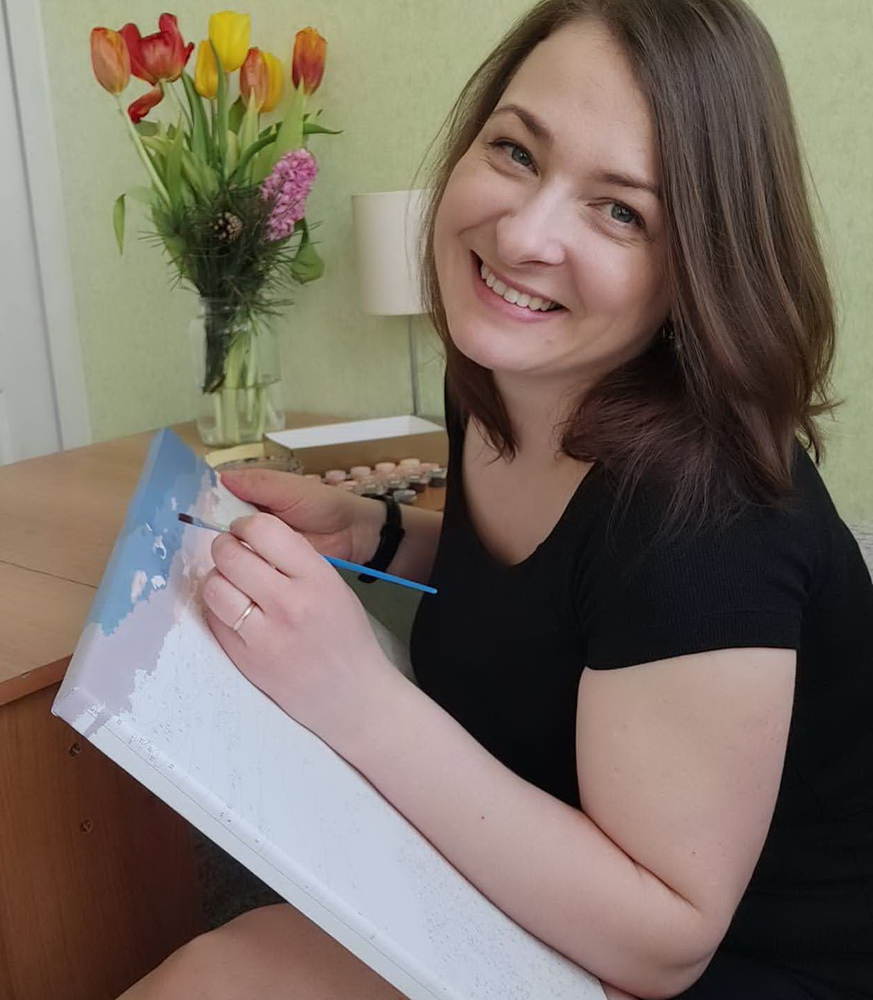

Hello, I'm Nana. I like to be a part of RS shool community. I'm learning html, css and java script for a couple of months and I'm feeling interested and excited. I can spend all day long make up a website or doing exercises on codrwars. But usually I stop myself and divide my time between my job, my family and my education. I hope that this opportunity will change my life so I'm doing my best.
My solution of KATA from CODEWARS: Create a function that takes an integer as an argument and returns "Even" for even numbers or "Odd" for odd numbers.
function even_or_odd(number) {
if (number % 2 === 0) {
return 'Even';
} else {
return 'Odd';
}
}